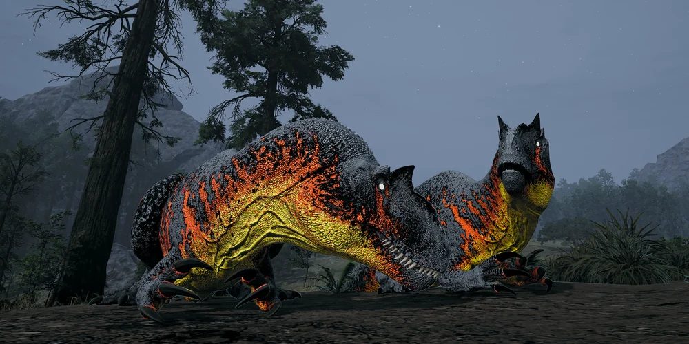
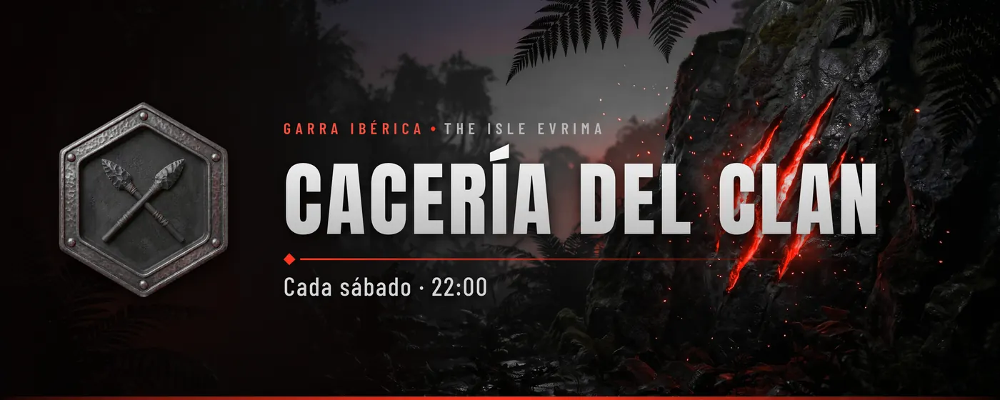

Cacería semanal: sábados a las 22:00
Cada sábado a las 22:00 (hora peninsular española) el clan sale de caza en grupo. Nos juntamos en el canal de voz Cacería 1, formamos manada y un líder marca el rumbo.
Próxima cacería

Desde España y Latinoamérica
Una cita fija para toda la manada
En Latinoamérica cae entre las 13:00 y las 18:00, según el país y la época del año.
Si aún no eres del clan, empieza por los tres pasos para entrar.
Cómo apuntarte
En Discord, en el evento Cacería del clan, pulsa «Me interesa» y Discord te avisará antes de empezar.
Para entrar en la voz del clan necesitas ser al menos Recluta.
Añádela a tu calendario y te avisará cada semana, a tu hora.
Añadir a mi calendarioGoogle Calendar (se abre en una pestaña nueva)
Hora de España
Así va cada semana
Miércoles, 20:00
Encuesta en #general: «¿Vienes a la cacería del sábado?». Contesta Voy, Voy, pero llego tarde o No puedo. Se cierra al empezar la cacería.
Sábado, 20:00
Dos horas antes, aviso en #general para quien tiene el rol 🔔 Cacerías, con el canal de voz y el evento. El rol lo eliges tú en Discord: en Canales y roles → Personalizar, responde «Sí, avisadme» a «¿Te avisamos de las cacerías?».
Sábado, 22:00
Todos a la voz en Cacería 1. Formamos manada por especie y un líder marca el rumbo. Antes de salir, repasa la guía de combate.
Ranking semanal. Cada semana sale en #ranking la tabla del clan con los datos de Asura Nexus de los últimos 7 días: bajas, K/D, horas, misiones, logros y muertes. Se va actualizando durante la semana y cada lunes empieza una nueva. Lleva el cazador de la semana (quien más bajas suma), el dino más letal del clan y un título gracioso para cada uno, como Rey de la cadena alimenticia (el que más bajas suma) o Merienda de la isla (el que más muere). Solo sale quien está en el grupo del clan en Asura Nexus: el enlace para unirte está en #ranking.
Nos vemos el sábado
Entra en el Discord y pulsa «Me interesa» en el evento de la Cacería.
Entrar en el Discord del clan (se abre en una pestaña nueva)